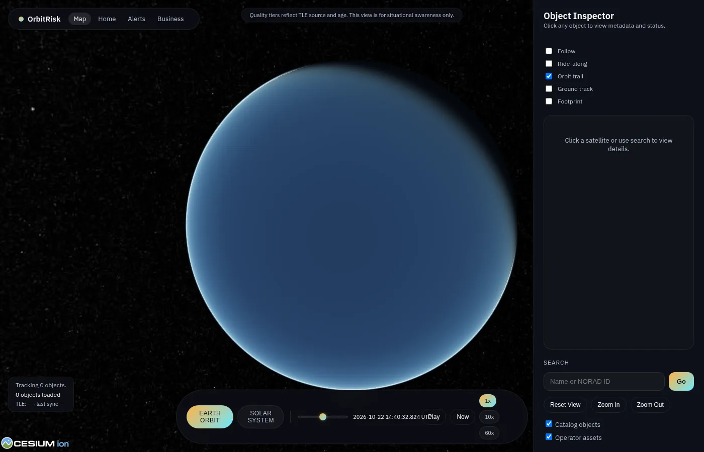

Case study · 2026 · public repo
orbtrisk-cockpit: finding satellite close approaches
A first-pass tool that finds tracked objects passing close to each other, merges repeat alerts, and logs what a person decided about each one. It's triage, not collision analysis.
RoleSole developer
StackPython 3.11, FastAPI
Tests21 tests, 6 files, CI
DeployDocker Compose

What was hard
Public TLE catalogs are big and noisy. A first pass needs to answer: which approaches are worth looking at, is this a new event or an update to an old one, and how much can I trust the data?
What I did
- Load TLEs and state vectors from Space-Track GP, CelesTrak or by hand, and keep track of where each came from and its epoch.
- Propagate with SGP4, 14 days ahead by default. Convert TEME to GCRS with astropy and do the geometry in GCRS.
- Flag anything that comes within the screening distance (10 km by default). Also read CCSDS CDM (KVN) messages in as events.
- Merge repeat alerts into one event with a history. Rate each Low, Watch or High, and grade the data A to D based on source and TLE age.
- A person makes the calls, and every decision goes in an audit log you can export as PDF. Webhooks are HMAC-signed, with session auth, rate limits, and origin and host checks.
Numbers
- 21 tests covering the API, auth, CDM parsing, propagation, risk ratings and settings. CI runs them on every push.
- Runs locally with one Docker Compose command.
Limits
It doesn't compute probability of collision (Pc), doesn't do orbit determination, and doesn't suggest maneuvers. TLE/SGP4 error grows to kilometers within days, so treat it as triage. It's a personal project. No satellite operator is involved.